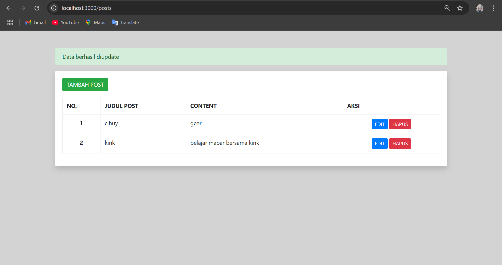
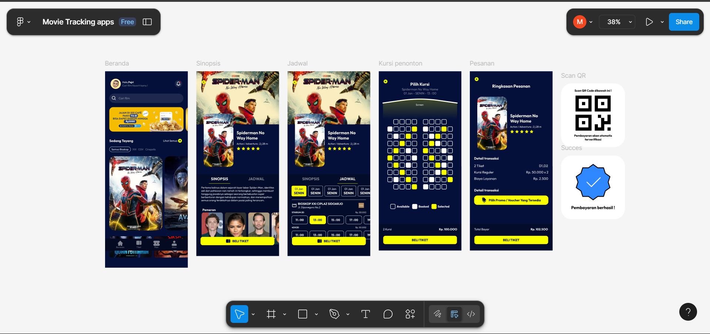
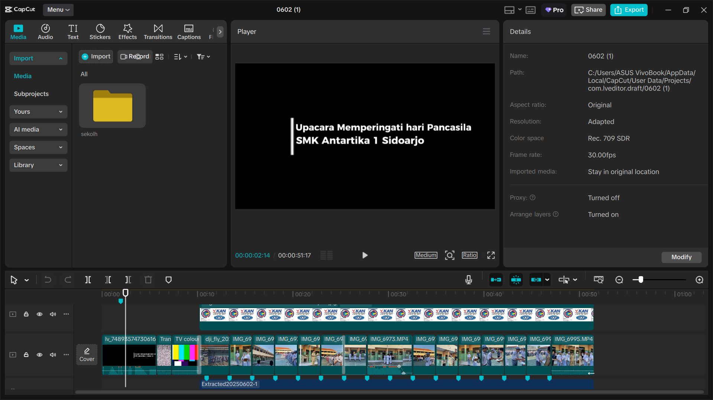

Tentang Saya
Hai, saya Mochamad Fajri Harianto, siswa SMK Antartika 1 yang memiliki minat dalam bidang teknologi dan desain. Saya cukup tertarik dengan dunia coding dan menikmati proses menciptakan hal-hal baru secara digital.
Sejujurnya, saya belum memiliki prinsip hidup yang benar-benar kuat. Saat ini, saya hanya mencoba mengikuti apa yang saya rasa menarik. Jika saya merasa tertarik, saya akan berusaha dengan serius, namun jika tidak, saya lebih memilih mengamati atau menonton dari jauh. Meskipun begitu, saya tetap mencoba untuk berkembang dan menemukan apa yang benar-benar penting bagi saya.
Saya bermimpi memiliki karier di bidang coding dengan penghasilan yang baik. Menurut saya, bekerja di bidang ini sangat menarik karena memungkinkan saya untuk terus belajar hal baru dan menciptakan sesuatu yang bermanfaat.
Salah satu kelebihan saya adalah kemampuan untuk cepat beradaptasi dalam berbagai situasi. Saya juga suka bekerja dalam tim dan berbagi pengetahuan dengan orang lain.
Di lingkungan sekolah, saya tergabung dalam tim digital creator yang biasanya bertugas mendokumentasikan kegiatan sekolah. Saya senang bisa ikut berkontribusi dalam hal-hal kecil yang bermanfaat untuk komunitas di sekitar saya.
Skill & Teknologi
Bahasa Pemrograman:
- HTML & CSS
- JavaScript (Dasar)
- PHP
- python
Tools & Software:
- Visual Studio Code
- Figma (Basic)
- Canva (Desain)
- CapCut (Editing video)
- Snapsheed (Editing foto)
Framework/Library:
- Bootstrap (Dasar)
Proyek / Hasil Karya
Tugas CRUD Node.js
Sebuah proyek tugas sekolah di mana saya membuat CRUD menggunakan Node.js. projek ini memungkinkan pengguna menambah, mengedit, dan menghapus data. Dibawah ini adalah rangkuman tentang projek tersebut.
Teknologi: Node.js
Tugas Figma Movie Tracking
Desain aplikasi pelacak film yang saya buat menggunakan Figma sebagai tugas UI/UX. Tampilan dibuat modern dan responsif.
Tools: Figma
Dokumentasi Kegiatan Sekolah
Sebagai bagian dari tim Digital Creator, saya mengedit video dan foto kegiatan sekolah seperti lomba, upacara, dan perpisahan. Konten dipublikasikan ke media sosial sekolah.
Tools: Canva, CapCut
Kontak & Sosial Media
- Email: fajriharianto2@gmail.com
- GitHub: github.com/MangFajri
- WhatsApp: +62 882-3194-4763
- Instagram: oyjriiyo
Visi Hidup
Kadang saya masih nyari arah, tapi satu hal yang pasti: saya pengen hidup saya bermanfaat, bukan cuma buat diri sendiri, tapi juga buat orang lain. Saya suka teknologi karena rasanya seru aja bisa bikin sesuatu dari nol, apalagi kalau itu bisa bantu orang.
Rencana ke Depan
- Punya karir di dunia coding, mungkin jadi backend/frontend developer
- Bikin project yang berguna, entah buat sekolah, UMKM, atau temen-temen
- Ngasih sesuatu balik ke lingkungan sekitar, sekecil apapun itu
- Punya penghasilan yang layak biar bisa bantu orang tua dan upgrade hidup
Opini Pribadi
Saya bukan orang yang langsung semangat tiap hari, kadang ngoding juga pusing. Tapi yang bikin saya terus jalan adalah rasa penasaran dan kepuasan waktu sesuatu akhirnya berhasil. Saya nggak ngejar jadi paling hebat, tapi saya pengen terus berkembang dan jadi versi terbaik dari diri saya.